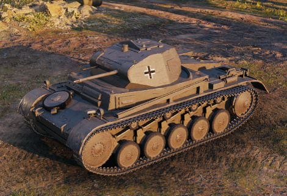

Německo
Německý technologický strom si rozdělíme do několika skupin. Jako první se podíváme na tanky od I. - V. úrovně a poté se postupně podíváme na dělostřelectvo, stíhače tanků, lehké, střední a těžké tanky.
Tanky nižších úrovní
Většina německých tanků na nižších úrovních jsou lehké, mobilní a především zábavné tanky. Linie lehkých tanků se může chlubit velmi zábavnými avšak ne vždy účinnými protitankovými kulomety, střední tanky jsou mobilní a na svou úroveň mají silné pancéřování. Mezi těmito tanky se také nachází 1 stíhač tanků, který kromně průbojného děla, může nést také houfnici ráže 105mm.
| Základní údaje | ||
|---|---|---|
| Název: Leichttraktor | Úroveň: I | |
| Typ: Lehký tank | Výdrž: 280 HP | |
| Poškození na výstřel: 36 / 36 / 42 HP | Průměrná průbojnost: 40 / 74 / 18 mm | |
| Mezi lety 1930-1934 byly vyrobeny čtyři prototypy lišící se výzbrojí, posádkou, hmotností a podvozkem. | ||
| Více zde | ||
| Základní údaje | ||
|---|---|---|
| Název: Pz.Kpfw. II | Úroveň: II | |
| Typ: Lehký tank | Výdrž: 340 HP | |
| Poškození na výstřel: 11 / 11 HP | Průměrná průbojnost: 23 / 46 mm | |
|  | Poslední úprava lehkého tanku Pz. II. Vozidlo mělo posílený pancíř, 2cm dělo Kw.K. 38 a vylepšený pozorovací periskop. Od března 1941 do prosince 1942 bylo vyrobeno celkem 524 vozidel. | |
| Více zde | ||
| Základní údaje | ||
|---|---|---|
| Název: Pz.Kpfw. II Ausf. G | Úroveň: III | |
| Typ: Lehký tank | Výdrž: 425 HP | |
| Poškození na výstřel: 30 / 30 / 40 HP | Průměrná průbojnost: 95 / 110 / 15 mm | |
| Německý lehký průzkumný tank z 2. světové války, který byl modifikací tanku Pz. II. Vozidlo mělo vylepšenou korbu a podvozek, výkonnější motor a pozorovací periskop pro radistu a řidiče, což zvyšovalo jeho dohled. | ||
| Více zde | ||
| Základní údaje | ||
|---|---|---|
| Název: Pz.Kpfw. III Ausf. E | Úroveň: III | |
| Typ: Lehký tank | Výdrž: 425 HP | |
| Poškození na výstřel: 70 / 70 / 90 HP | Průměrná průbojnost: 60 / 96 / 25 mm | |
| Objednávka na zkonstruování 15tunového pásového vozidla s dělovou výzbrojí byla zadána v roce 1935. Bez ohledu na to, že hmotnost prvního vozidla v plném měřítku, Pz.Kpfw. III Ausf. E, dosáhla 19,5 tun, byla jeho konfigurace považována za úspěšnou a počet vozidel nakonec vzrostl na 96. Další modifikace pak byly ještě oblíbenější a Pz.Kpfw. III se stal nejvíce sériově vyráběným vozidlem Wehrmachtu. | ||
| Více zde | ||
| Základní údaje | ||
|---|---|---|
| Název: Pz.Kpfw. II Luchs | Úroveň: IV | |
| Typ: Lehký tank | Výdrž: 520 HP | |
| Poškození na výstřel: 30 / 30 / 40 HP | Průměrná průbojnost: 95 / 110 / 15 mm | |
| Ve srovnání s Pz.Kpfw. II Ausf. C mělo vozidlo nový trup a věž, a také podvozek s překrývajícím se rozložením pojezdových kol. Jako průzkumný tank měl dobré vlastnosti, ale poté, co se ukázalo, že výroba je příliš drahá, bylo vyrobeno pouze 131 vozidel modifikace L. | ||
| Více zde | ||
| Základní údaje | ||
|---|---|---|
| Název: Pz.Kpfw. III Ausf. J | Úroveň: IV | |
| Typ: Střední tank | Výdrž: 540 HP | |
| Poškození na výstřel: 70 / 70 / 90 HP | Průměrná průbojnost: 67 / 130 / 25 mm | |
| Výroba varianty J začala v březnu 1941. K posílenému pancíři dostalo vozidlo navíc nové 50mm dělo KwK 38, které se povařovalo za extrémně úspěšné; 1 067 ostatních vozidel mělo dělo KwK 39, což byla vylepšená verze s lepší průbojností. Pokus o montáž 75mm děla (varianta N) byl uznán jako selhání, a většina vozidel ve velkém měřítku byly varianty J, L a M (s 50mm děly, která měla bezchybnou pověst). Celkem se vyrobilo 5 691 vozidel, z nichž 1 969 bylo vybaveno děly s dlouhou hlavní a 2 391 pak 50mm děly s krátkou hlavní. | ||
| Více zde | ||
| Základní údaje | ||
|---|---|---|
| Název: StuG III Ausf. B | Úroveň: IV | |
| Typ: Stíhač tanků | Výdrž: 400 HP | |
| Poškození na výstřel: 350 / 350 / 410 HP | Průměrná průbojnost: 64 / 104 / 53 mm | |
| V roce 1935 Erich von Manstein z generálního štábu německé armády popsal v dopise generálovi Ludwigu Beckovi myšlenku na vybudování útočného dělostřelectva pro podporu útočících jednotek pěchoty. V roce 1937 bylo vyrobeno prvních pět prototypů série „nula“. Raná úprava z Ausf.A na Ausf.F/8 byla vyráběna do prosince 1942. | ||
| Více zde | ||